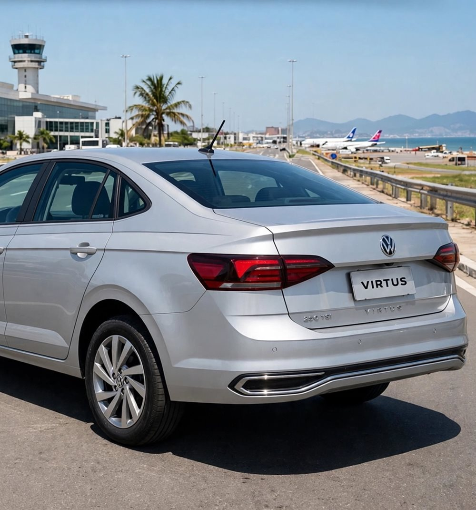
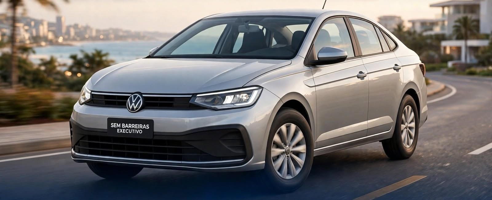
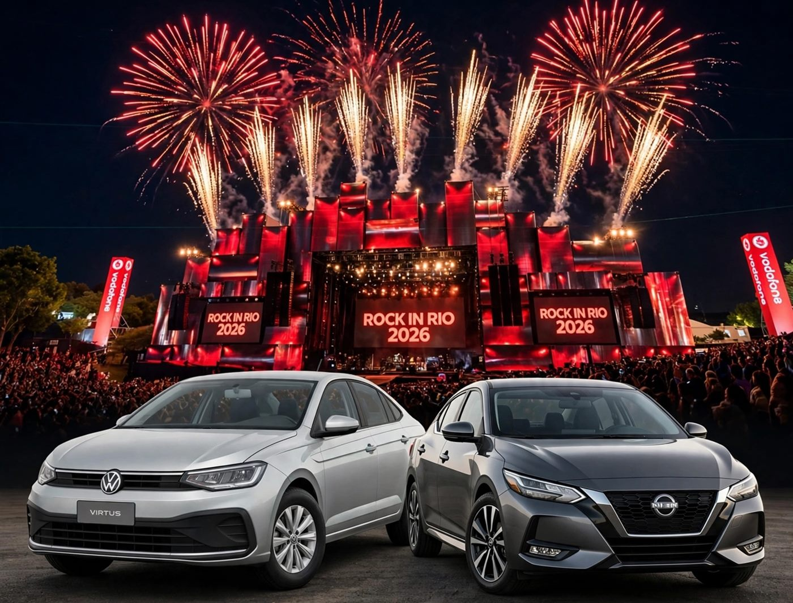
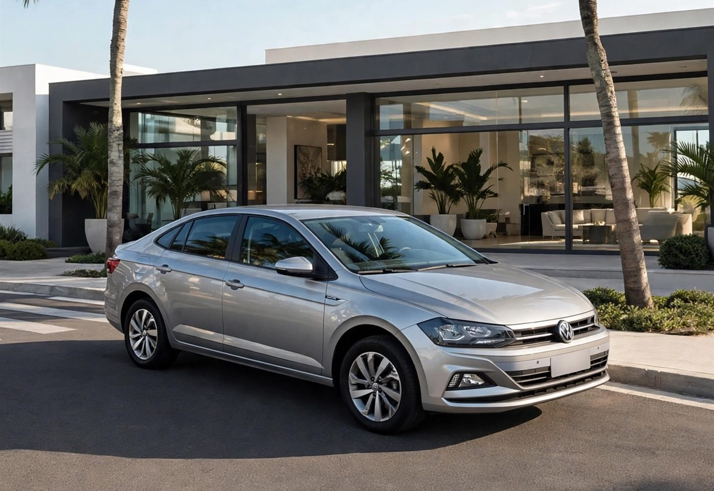
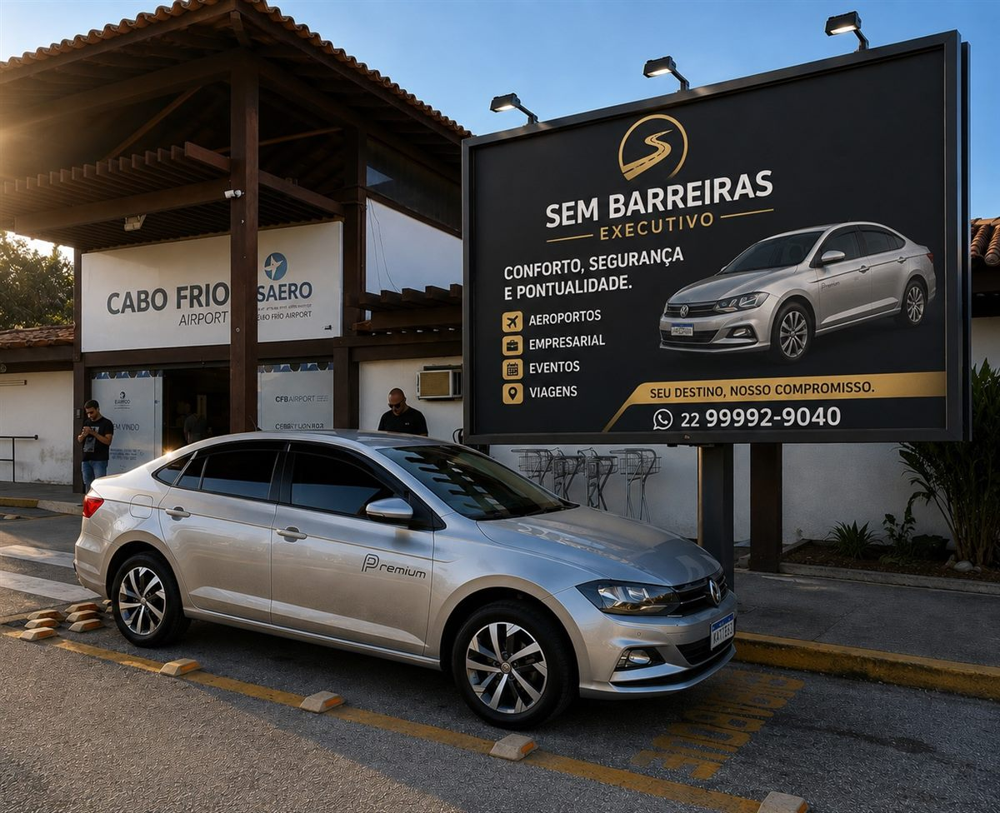

Mais pedido
Aeroportos
Galeão, Santos Dumont e Cabo Frio. Acompanho o seu voo em tempo real: se atrasar, eu ajusto o horário e te espero no desembarque.

Motorista executivo · Todo o estado do RJ
Transfer particular para qualquer cidade do estado do Rio de Janeiro. Horário agendado, carro com seguro e motorista na porta, sem depender de aplicativo.
Quem tem voo não pode contar com a sorte
Isso não é luxo. É respeito pelo seu tempo.
O que eu faço

Galeão, Santos Dumont e Cabo Frio. Acompanho o seu voo em tempo real: se atrasar, eu ajusto o horário e te espero no desembarque.
Executivos, reuniões e equipes em visita à região. Discrição, pontualidade e o carro te esperando na porta.
Região dos Lagos, Serra, Costa Verde e passeios pelo Rio, com guia de turismo cadastrado no Cadastur. Ar condicionado, água e wi-fi a bordo.

Ida e volta garantidas: eu te deixo na porta e te espero até o último show acabar. Sem fila, sem estacionamento, sem dividir o carro com desconhecidos.
Ver próximos showsAgendamento
Preencha a rota e o horário. A mensagem já chega pronta no meu WhatsApp e eu te respondo com o valor.
Rotas mais pedidas
“A agenda é organizada com antecedência para garantir pontualidade, conforto e segurança em cada trajeto.”Leandro Barreira
Vá de executivo, volte tranquilo
Saindo de qualquer cidade do estado do Rio, com valor promocional na ida e volta e lugar para até 4 pessoas.
Tem show ou evento chegando? Me chama que eu monto a sua ida e volta.

O carro
Sedã prata, confortável para viagem longa e com espaço de verdade para a bagagem.
“Comprei um motor novo para o carro. Entre consertar sem ter certeza e correr o risco de parar no meio do caminho com cliente, preferi investir em um novo.”
Precisa de um segundo carro para o grupo? Também atendemos com Nissan Sentra, sob consulta.
Seguro de verdade
Não é proteção veicular. É apólice contratada com seguradora, para o carro e para quem está dentro dele.
O Virtus tem seguro contratado com seguradora, com apólice e coberturas definidas. Nada de associação ou rateio de proteção veicular.
Toda viagem conta com seguro de Acidentes Pessoais de Passageiros (APP). Você e quem estiver com você viajam cobertos do embarque ao desembarque.
Como funciona
Manda a rota, o dia e o horário pelo WhatsApp (ou pelo formulário acima).
Te passo o valor fechado e confirmo o horário. Sem preço dinâmico.
Chego antes do combinado. Se for aeroporto, acompanho o voo em tempo real.
Viagem tranquila, com ajuda na bagagem até a porta.

Quem dirige
Motorista executivo atendendo todo o estado do Rio de Janeiro. Meu trabalho é simples de explicar e difícil de fazer bem: estar no lugar certo, no horário certo, com o carro impecável e a boca fechada sobre o que acontece dentro dele.
Faço capacitação constante em atendimento executivo, porque a regra aqui é hoje melhor que ontem, amanhã melhor que hoje.
Dúvidas
Tem, e é seguro de verdade, não proteção veicular. O carro tem apólice com seguradora e toda viagem conta com seguro de Acidentes Pessoais de Passageiros (APP), que cobre você e quem estiver com você.
Todo o estado do Rio de Janeiro: capital, Niterói, Região dos Lagos, Região Serrana, Costa Verde, Norte e Sul Fluminense. Me diz a origem e o destino que eu monto o trajeto.
Depende da rota, do horário e se é só ida ou ida e volta. Me manda os detalhes pelo WhatsApp que eu te passo o valor fechado na hora, sem surpresa no final. Ida e volta sai com valor promocional.
Eu acompanho o voo em tempo real. Se atrasar, ajusto o horário e te espero no desembarque. É só me passar o número do voo na hora de agendar.
Até 4 passageiros. O Virtus tem porta-malas de 521 litros, cabe mala grande de viagem tranquilamente. Se o grupo for maior, dá para combinar um segundo carro.
Sim, o atendimento é 24h. Voo cedo ou volta de show tarde da noite fazem parte da rotina.
Espero. A ida e a volta ficam garantidas no horário combinado, e eu te espero até o último show acabar.
Quanto antes, melhor, principalmente em fim de semana, feriado e data de show. A agenda costuma encher. Mas pode chamar mesmo em cima da hora que eu vejo se consigo encaixar.